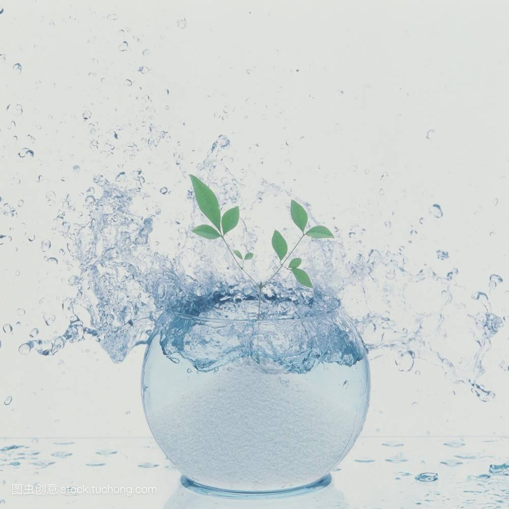
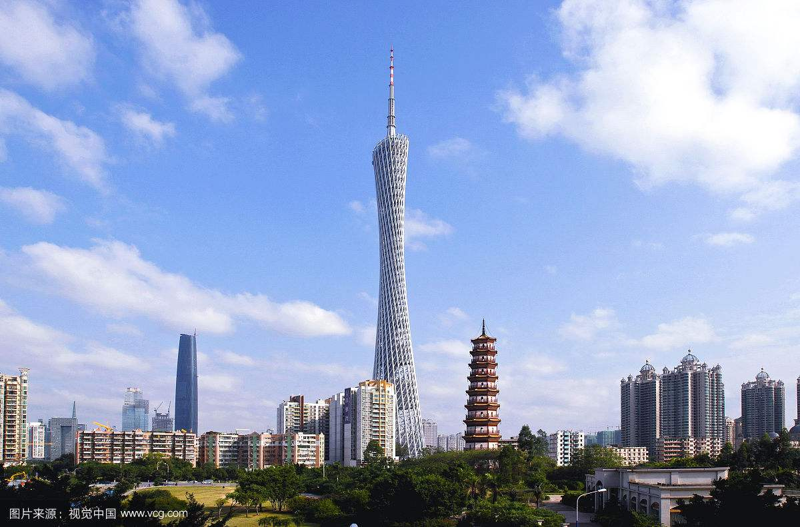
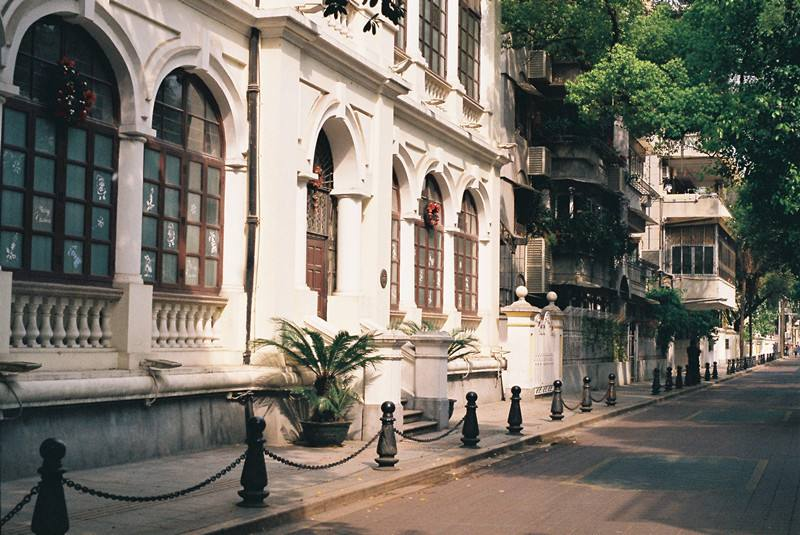

- 
- 
- 
最新文章
有问题，找一禅
1.人生，不过一杯茶！ 满也好，少也好，争个什么！ 浓也好，淡也好，自有味道。 急也好，缓也好，那又如何？ 暖也好，冷也好，相视一笑。
2.不吃闲饭，不看冷脸；不掩己拙，不揭人短；不失童趣，不露媚颜；不笑人穷，不欠人钱；不求人喜，不招人烦 。
3.再重要的人让你失望多了，也变得不再重要了。有时候，失望到一定程度后，反而会开出一朵花来，那朵花的名字叫，无所谓。所以任何的安慰，都没有自己看得透彻来得有效。
4.生活就像一杯白开水，你每天都在喝，不要羡慕别人喝的饮料有各种颜色，其实未必有你的白开水解渴，人生不是靠心情活着，而要靠心态去生活。调整心态看生活，处处都是阳光。
1
1
经过一番磨砺,卵石才变得更加美丽光滑
梯子的梯阶从来不是用来搁脚的，它只是让人们的脚放上一段时间，以便让别一只脚能够再往上登。山路曲折盘旋，但毕竟朝着顶峰延伸。只有登上山顶，才能看到那边的风光。即使道路坎坷不平，车轮也要前进；即使江河波涛汹涌，船只也航行。只有创造，才是真正的享受，只有拚搏，才是充实的生活。敢于向黑暗宣战的人，心里必须充满光明。崇高的理想就象生长在高山上的鲜花。如果要搞下它，勤奋才能是攀登的绳索。自然界没有风风雨雨，大地就不会春华秋实。勤奋是你生命的密码，能译出你一部壮丽的史诗。忙于采集的蜜蜂，无暇在人前高谈阔论。
1
1
献给那些迷茫的人
人生会面对无数次的选择，我们衡量的时候，总会不由自主的更倾向于其中一个，可我们总会碰到两个同样重要的选择，既然是选择，我们就必须得要放弃一个，但无论放弃哪一个，我们都会不甘心。同等重要的事情，是最难做出选择的事情，我们迷茫着，纠结着，或许我们不是迷茫，只是我们方向太明确了，我们清楚的知道自己想要什么，但我们想要的东西散落在了两个方向。在这里，有我们喜欢做的事情，但却不是我们喜欢留下的地方，去那里，是我们一心想要到达的地方，却要做着我们不喜欢的事情，就是这么两难的选择，放弃哪一个心里都不痛快。
1
1